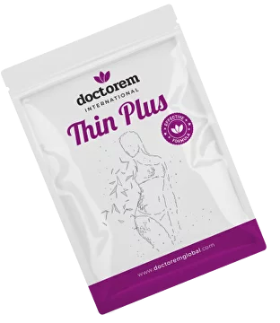
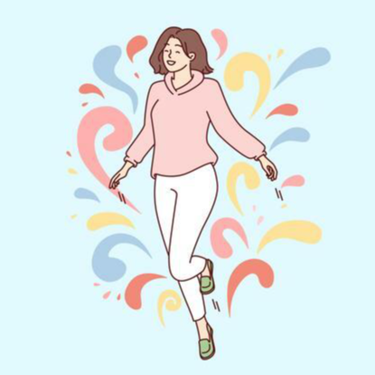
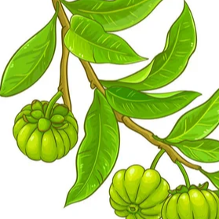

Thin Plus
6000 р.

ОПИСАНИЕ:
Благодаря уникально подобранному составу целебных веществ, применение Thin Plus улучшает обмен веществ, ускоряет метаболизм, способствует снижению веса и поддержанию хорошей физической формы. После регулярного применения пластыря в течение некоторого времени это становится привычным и приводит к желаемому эффекту.ОБЛАСТЬ ПРИМЕНЕНИЯ:
- снижение веса;
- сжигание жира;
- понижение аппетита;
- ускорение метаболизма;
- проблемы со вздутием живота;
- помощь при запорах;
- понижение инсулино-резистенции;
- болезненные месячные;
- синдромы во время менопаузы.
СРОК ЭФФЕКТИВНОГО ВОЗДЕЙСТВИЯ:
24 часа с момента нанесения.СОДЕРЖИМОЕ УПАКОВКИ:
3 упаковки:- две упаковки с 5-ю пластырями для экспликации в область живота;
- одна упаковка с 30-ю пластырями для экспликации в другие зоны ( ноги, руки, ягодицы и т.д.)
СОСТАВ АКТИВНОГО ВЕЩЕСТВА:
ЗОНЫ НАНЕСЕНИЯ:
В комплекте предусмотрен пластырь специальной формы для экспликации в зоне живота.Остальные пластыри наносятся в проблемные зоны на Ваше усмотрение. Пример зон нанесения указан на рисунке.
ОПИСАНИЕ АКТИВНЫХ ЭЛЕМЕНТОВ

5-HTP (5-гидрокситриптофан)
- это аминокислота, которая участвует в образовании серотонина и триптофана. Серотонин и триптофан поддерживают работу нервной системы: нормализуют настроение и биоритмы, помогают справиться со стрессом, способствуют повышению работоспособности и улучшению памяти, ускоряют адаптацию при смене часовых поясов. 5-HTP называют натуральным антидепрессантом, который не вызывает привыкания и имеет мягкое действие, благодаря естественному для человека составу.Гидрокситриптофан 5-HTP играет важную роль в неврологических и метаболических процессах. Он может помочь в борьбе с депрессией, состояниями тревожности и паники, нарушениями сна, ожирением, миоклонусом и серотониновым синдромом. Биосинтез 5-HTP необходим для образования мелатонина - гормона сна, который регулирует режим сна и бодрствования (циркадные ритмы человека).
Гуарана Камелия
Уже давно известны свойства этого растения, включающие в себя стимуляцию организма, помощь в похудении и улучшения работы мозга. Экстракт гуараны является адаптогеном. Так называются вещества, которые помогают организму адаптироваться к неблагоприятным условиям. Гуарана помогает переносить высокие нагрузки - как физические, так и интеллектуальные. Она повышает иммунитет, улучшает настроение и приводит организм в тонус. Препараты на основе guarana широко используются в спорте. Экстракт гуараны входит в состав многих популярных предтреников. Так называются пищевые добавки для спортсменов, которые нужно пить перед тренировкой.Зеленый чай
- лучшее средство от усталости. Настой из зелёного чая применяют в качестве противомикробного средства при дизентерии. Такой чай является средством профилактики мочекаменных и желчнокаменных болезней. Зелёный чай поддерживает тонус организма и утоляет чувство голода.Благодаря содержанию витамина С, зелёный чай помогает справится со многими онкологическими заболеваниями. Витамин Р, содержащийся в зеленом чае, делает стенки кровеносных сосудов крепче и эластичнее.
Софорокозид
- активный компонент получаемый из Софоры Японской, обладает противомикробным, противовоспалительным и улучшающим регенерацию тканей действием.Катехиновая Камелия Китайская
Катехины относятся к фенольным соединениям органического происхождения. Эти вещества отличаются довольно сильным антиоксидантным действием и принимают активное участие в процессе метаболизма.Капсаицин
В перце и некоторых других острых продуктах содержится вещество под названием "капсаицин". Оно активно воздействует на жировые отложения, провоцируя их сжигание и, как следствие, потерю. А еще капсаицин улучшает работу пищеварительной системы, стимулируя секрецию желудочного сока и ускоряет обмен веществ, что также полезно длястройной фигуры.Льняное масло
- обладает уникальными оздоравливающими свойствами благодаря идеальному соотношению жирных кислот омега-3-6-9. Оно отлично заменяет рыбий жир и хорошо усваивается. Употребление этого масла благоприятно сказывается на работе сердца, сосудов, состоянии кожи, поддерживает работу пищеварительной системы, выводя токсины из организма и помогая похудеть.
Цинк Пируват
- принимает непосредственное участие в таких жизненно важных процессах, как регуляция жирового и углеводного обмена, ускоряет заживление ран, необходим для правильного развития мозга и нормальной работы нервных клеток, стимулирует иммунитет, повышая сопротивляемость организма в период простудных заболеваний.Фукус пузырчатый
Или Fucus vesiculosus, полезные свойства которого известны с давних пор, активно применяется в современной медицине и косметологии. Обитающий в холодных морских водах, он содержит уникальный биополимер со множеством лечебных эффектов - фукоидан. Он обладает противовирусными, противоопухолевыми, иммуномодулирующими, противовоспалительными, радиозащитными, а также многими другими целебными свойствами.Кофеин
- это стимулятор центральной нервной системы, который может уменьшить усталость и сонливость. В нормальных дозах кофеин оказывает различное влияние на обучение и память, но в целом он улучшает время реакции, бодрствование, концентрацию и координацию движений.Лептин
- пептидный гормон, регулирующий энергетический обмен, который преимущественно вырабатывается жировыми клетками и энтероцитами в тонкой кишке. Гормон подавляет чувство голода, что, в свою очередь, уменьшает накопление жира в адипоцитах.Шелуха подорожника (псиллиум)
- полезный пребиотик. Семена псиллиума получают от растения, известного как Plantago ovata (подорожник яйцевидный), родиной которого является Южная и Западная Азия. Каждое растение производит около 15 000 крошечных и покрытых шелухой семян. Эта шелуха является богатым источником вязкого растворимого волокна - клетчатки. Одна столовая ложка (5 граммов) цельной шелухи псиллиума содержит 4 грамма растворимой клетчатки.
